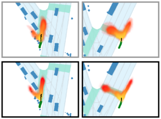

Sean SegalI'm currently a research scientist at Waabi, where I work on deep learning research for the development of self-driving cars. I'm also a PhD student in Computer Science at the University of Toronto supervised by Professor Raquel Urtasun. Previously, I was a research scientist at Uber ATG R&D and an engineer at Facebook and RetailMeNot Inc. I obtained my Masters in Computer Science at University of Toronto in 2020, supervised by Professor Raquel Urtasun. Prior to that, I did my Bachelor's at Brown University studying Computer Science and Economics. Email / GitHub / Google Scholar / LinkedIn / Twitter |
Publications |
Just Label What You Need: Fine-Grained Active Selection for Perception and Prediction through Partially Labeled ScenesSean Segal, Nishanth Kumar, Sergio Casas, Wenyuan Zeng, Mengye Ren, Jingkang Wang, Raquel Urtasun arXiv preprint, 2021 arXiv / pdf Introduces fine-grained active selection via partial labeling for efficient labeling for perception and prediction. |
|

|
Diverse Complexity Measures for Dataset Curation in Self-DrivingAbbas Sadat, Sean Segal, Sergio Casas, James Tu, Bin Yang, Raquel Urtasun, Ersin Yumer arXiv preprint, 2021 arXiv / pdf Model-agnostic complexity measures for dataset curation across autonomy tasks. |
Universal Embeddings for Spatio-Temporal Tagging of Self-Driving LogsSean Segal, Eric Kee, Wenjie Luo, Abbas Sadat, Ersin Yumer, Raquel Urtasun Conference on Robot Learning (CoRL), 2020 (Oral, Best Paper Presentation Finalist) arXiv / pdf / video / live presentation Spatio-temporal tagging of self-driving scenes from raw sensor data. |
|
End-to-end Contextual Perception and Prediction with Interaction TransformerLingyun (Luke) Li, Bin Yang, Ming Liang, Wenyuan Zeng, Mengye Ren, Sean Segal, Raquel Urtasun International Conference on Intelligent Robots and Systems (IROS), 2020 (Oral) arXiv / pdf Adapting the Transformer to model multi-agent interactions in trajectory prediction. |
|
|  |
Discrete Residual Flow for Probabilistic Pedestrian Behavior PredictionAjay Jain, Sergio Casas, Renjie Liao, Yuwen Xiong, Song Feng, Sean Segal, Raquel Urtasun Conference on Robot Learning (CoRL), 2019 arXiv / pdf / video Multimodal, long-range pedestrian prediction through probabilistic occupancy maps. |
ProjectsHere are some projects I've worked on over the years. These include coursework, side projects, and work I've done during internships. |
Carla RL GymGitHub OpenAI Gym environment for the CARLA self-driving simulator with implementations of multiple common RL baselines (e.g., A2C, ACKTR, PPO). Originally written as part of a final project for Prof. Jimmy Ba’s deep reinforcement learning course. Now has 50+ stars on Github! |
|
Javascript Imports LSP ServerGitHub An LSP server for Javascript imports, providing Diagnostics, Code Actions and Autocompletion for Javascript Imports in any LSP-compatible IDE. Written during my time at Facebook on the Nuclide team. Most of the code is open source and can be found here. |
|
T.I.N.C is not Catanwebsite / GitHub Fully functional Settlers of Catan emulator online. Also offers advanced economic features including decimal resource counts and dynamic port exchange rates based on resource supply & demand. Play Online Now! |
|
Simplex SolverGitHub Solves Linear Programs in Python using the Simplex Method. Originally written as an assignment for Optimization Methods for Finance course at Brown University. |
TeachingBrown University Spring 2018 - Head TA for CS1420 (Machine Learning) with Prof. Michael Littman Fall 2017 - TA for CS1470 (Deep Learning) with Prof. Eugene Charniak Spring 2017 - TA for CS0320 (Software Engineering) with Prof. John Jannoti Fall 2016 - TA for CS0330 (Computer Systems) with Prof. Tom Doeppner Spring 2016 - TA for CS0004 (Scientific Computing) with Prof. Dan Potter |
|
Design and source code from Jon Barron's website |